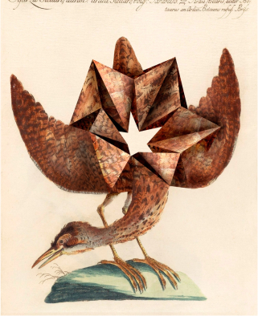

makers place
makers place

animalis polyedae I by Volker Hermes
The Story
With mathematics it is more difficult, you can hardly build up feelings to the polyhedra. It's different now that they are connected to each other.
Process
My collages are based on historical drawings of animals, either from early scientific expeditions or natural history studies. Using image processing, I transform individual parts of the drawn animal bodies into geometric shapes. In a final step, I combine the original drawing and the polyhedron to create a hybrid new animal.
File Size & Format
-
File Size: ~33.4MB
-
Dementions: ~3,000-5,000 width
-
File Format: .TIF